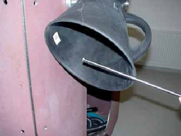

Mitarbeiter müssen mindestens einmal jährlich über die bei ihren Tätigkeiten auftretenden Gefahren sowie über Maßnahmen zu ihrer Abwendung unterwiesen werden. Betriebsanweisungen bilden bei Arbeiten mit Anlagen zur Arbeitsplatzlüftung eine Grundlage für Unterweisungen. Inhalt und Zeitpunkt der Unterweisung sind zu dokumentieren und von den unterwiesenen Mitarbeitern zu bestätigen.
In einer Gefährdungsbeurteilung sind durch den Unternehmer die Gefährdungen zu erfassen, das Risiko einzuschätzen und Maßnahmen festzulegen.
Er hat auf Grund des Ergebnisses der Gefährdungsbeurteilung Betriebsanweisungen zu erstellen, die das Verhalten im Betrieb zur Vermeidung von Unfall- und Gesundheitsgefahren regeln und an die Mitarbeiter gerichtet sind.
Inhaltlich enthalten sie sicherheitstechnische Hinweise für das bestimmungsgemäße Betreiben, für die Instandhaltung und Reinigung, bei Störungen und für die Prüfung.
Demgegenüber sind Betriebsanleitungen Angaben des Herstellers zum sachgerechten, bestimmungsgemäßen und sicheren Betreiben. Eine Betriebsanleitung ist keine Betriebsanweisung!
Anlagen zur Arbeitsplatzlüftung müssen regelmäßig instand gehalten und gereinigt werden, damit die Funktionsfähigkeit erhalten bleibt.
In einem Instandhaltungs- und Reinigungsplan sind
festzulegen.
Zu den Anlagen zählen nicht nur die Lüftereinheiten und Erfassungseinrichtungen, sondern auch die Luftleitungen und Abscheider.
Mitarbeiter dürfen während der Instandhaltungs- und Reinigungsarbeiten durch freiwerdende Luftverunreinigungen nicht gefährdet werden; ebenso sind Brand- und Explosionsgefahren auszuschließen.
In einer Gefährdungsbeurteilung sind die Gefährdungen während der Instandhaltungs- und Reinigungsarbeiten zu erfassen, das Risiko einzuschätzen und Maßnahmen festzulegen. Diese finden sich dann in der Betriebsanweisung für die entsprechenden Arbeiten an den bezeichneten Anlagen wieder.
Weitergehende Informationen siehe Anhang 5.
Die Wirksamkeit von lufttechnischen Anlagen muss regelmäßig geprüft werden.
Vor der ersten Inbetriebnahme, nach wesentlichen Änderungen und regelmäßig, mindestens jedoch einmal jährlich, muss eine fachlich befähigte Person diese Prüfung durchführen. Die Ergebnisse sind zu dokumentieren. Um eindeutige Aussagen zu treffen, gehört zu der Prüfung auch eine Funktionsmessung, z. B. Volumenstrom, Luftgeschwindigkeit. Messpunkte für die nachfolgenden Funktionsmessungen müssen bei der Abnahmeprüfung festgelegt werden. Weichen die Ergebnisse von den Sollwerten ab, sind entsprechende Maßnahmen zu ergreifen.
Weitergehende Informationen siehe Anhang 6.

Abbildung 12: Messung der Wirksamkeit einer lufttechnischen Anlage mit einem Thermoanenometer